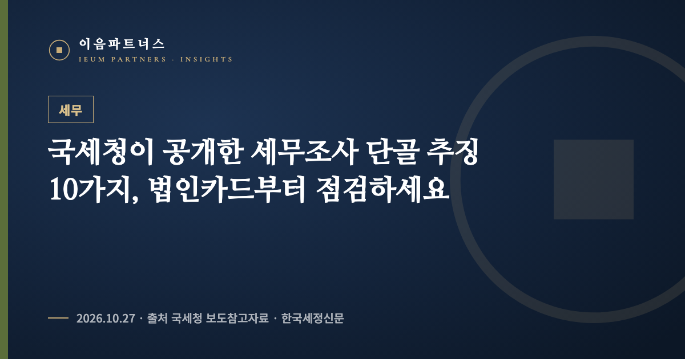

국세청이 공개한 세무조사 단골 추징 10가지, 법인카드부터 점검하세요

세무조사를 받으면 국세청이 무엇을 볼지 몰라 막막하다는 대표님이 많습니다. 2026년부터는 사정이 조금 달라졌습니다. 국세청이 세무조사에서 반복해서 과세하는 유형 10가지를 '중점검증항목'으로 정해 미리 공개했기 때문입니다. 이 글에서는 10가지가 무엇인지, 우리 회사가 신고 전에 무엇을 점검하면 좋은지 정리합니다.
국세청은 2026년 10월 27일 회계·법무법인 간담회에서 이 제도를 세무조사 혁신 성과로 소개했고, 조사국장은 앞으로 “업종별 또는 테마별로 반복 과세되는 대표적인 유형을 추가 공개”하겠다고 밝혔습니다(국세청 보도참고자료). 공개된 목록은 조사에서 먼저 확인할 항목이기도 합니다. 우리 회사가 어느 항목에 걸릴 수 있는지 궁금하시다면 카카오톡 채널 이음파트너스로 편하게 물어보셔도 됩니다.
국세청이 공개한 10가지는 무엇인가
국세청은 2026년 4월 2일 개청 60주년인 올해를 '세무조사 대전환의 원년'으로 선포하면서 중점검증항목을 처음 공개했습니다. 최근 조사 실적에서 자주 과세된 유형을 고른 것으로, 유형별 유의사항·과세 사례·질문과 답변을 국세청 누리집에 올리고 조사를 시작할 때 안내자료로도 줍니다(한국세정신문).
| 구분 | 내용 |
|---|---|
| 법인세·소득세 (7개) | 법인(사업용) 신용카드 사적 사용, 대표자 등 개인계좌를 통한 매출 신고 누락, 정당한 사유 없는 매출채권 임의 포기, 근로 사실이 없는 가공인건비(실제로 일하지 않은 사람에게 준 것으로 꾸민 인건비) 계상, 연구·인력개발비 부당 세액공제, 가지급금 등의 인정이자 계산 누락, 자산으로 잡아야 할 비용을 당기 비용으로 처리 |
| 부가가치세 (3개) | 사실과 다른 세금계산서 수수, 과세·면세 구분 오류, 개인적 공급(회사 물건을 대표나 직원이 개인적으로 쓰는 것) 등에 대한 신고 누락 |
대표님 회사와 가까운 항목은 무엇일까
① 법인카드와 가족 인건비
목록의 첫 줄은 법인카드 사적 사용입니다. 가족 외식이나 개인 쇼핑처럼 업무와 관계없는 결제를 회사 비용으로 처리하면 비용으로 인정받지 못하고, 대표 개인의 소득으로 보아 세금이 더 붙을 수 있습니다. 일하지 않는 가족에게 급여를 주는 가공인건비도 같은 맥락이니, 가족 직원이 있다면 근무를 보여 줄 기록이 있는지 살펴보시길 권합니다.
② 가지급금 인정이자와 연구개발비 공제
대표가 회사 돈을 빌려 간 것으로 처리된 가지급금이 있으면, 세법이 정한 이자(인정이자)를 회사가 받은 것으로 계산해 신고해야 합니다. 연구·인력개발비 세액공제도 공제 금액이 큰 만큼 연구 인력과 연구 활동이 요건에 맞는지 꼼꼼히 확인되는 항목입니다.
조사 방식도 함께 바뀌었습니다
중점검증항목 공개와 함께 조사 방식도 달라졌습니다. 국세청이 밝힌 세 가지 변화와 성과는 다음과 같습니다(2026년 9월 기준).
| 구분 | 내용 |
|---|---|
| 현장 상주조사 최소화 (2025년 10월~) | 조사원이 회사에 머무는 기간을 줄이고 국세청 사무실 조사 중심으로 운영, 평균 상주 기간 52일 → 33일 |
| 정기조사 시기선택제 (2026년 4월~) | 정기 세무조사 대상 기업이 3개월 범위에서 조사 시작 시기를 선택, 안내문 3,873건 중 88%가 1순위 희망 시기로 결정 |
| 중점검증항목 공개 (2026년 4월~) | 반복해서 과세되는 10개 유형을 미리 공개 |
조사 부담은 줄었지만 무엇을 볼지는 더 분명해졌습니다. 미리 공개된 항목에서 문제가 나오면 몰랐다고 설명하기가 그만큼 어려워질 수 있습니다.
대표님이 지금 확인할 것
- 법인카드 사용 내역 중 업무 관련성을 설명하기 어려운 결제가 있는지
- 급여를 받는 가족 직원이 실제로 일했다는 근무 기록이 있는지
- 가지급금 잔액이 있다면 인정이자를 계산해 신고했는지
- 연구·인력개발비 세액공제를 받았다면 연구 인력과 연구 기록이 요건에 맞는지
참고한 자료
- 세무조사 패러다임 대전환 1주년, 성과를 넘어 미래로 — 국세청 보도참고자료 (2026.10.27)
- 국세청, 세무조사 나가면 이것부터 본다 — 한국세정신문 (2026.04.02)
올해 결산 전에 10가지 항목을 한 번 훑어보고 싶으시다면 카카오톡 채널 이음파트너스에서 함께 점검해 보실 수 있습니다.
※ 이 글은 일반적인 정보 제공을 위한 것으로, 개별 사안은 세무사·노무사 등 전문가와 함께 확인하시기 바랍니다.